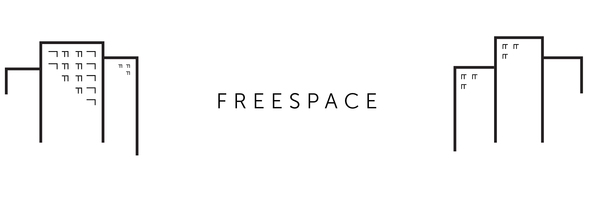
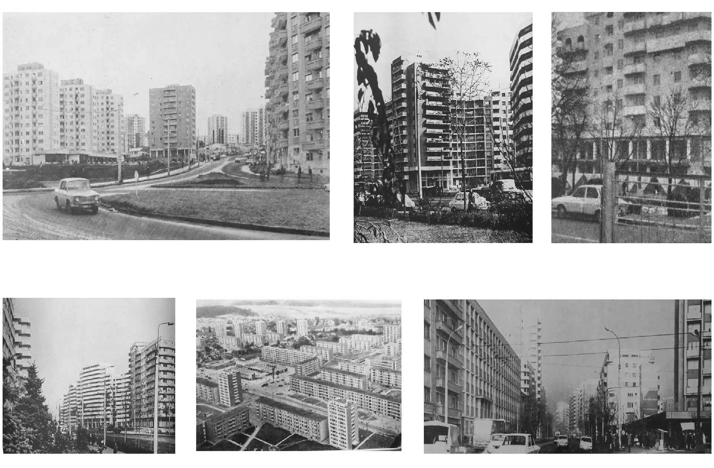
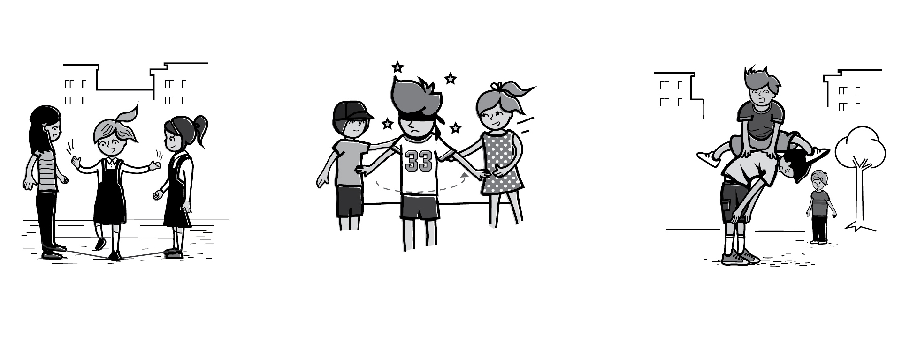
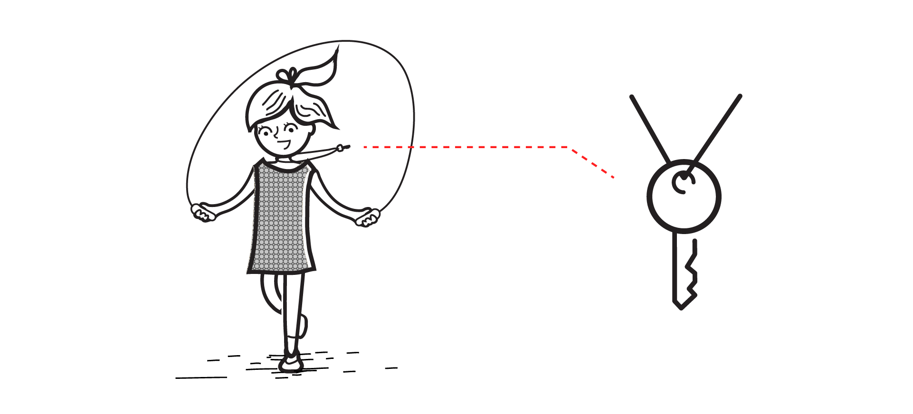

Mnemonics appeals to the ancient technique of collecting memories – ars memoriae, based on the connection between thoughts
and a visual support invested with meaning, which is impossible to forget. The ability of space
to generate strong memories is the ultimate challenge of architecture and helps endlessly access
and re-access the emotions related to a specific story.

We reflect on different moments of a space that is representative for the universe of the Romanian urban environment. During
the second part of the XXth century most cities in Romania have gone through an accelerated process
of urbanization. This generated an interstitial space of the urban fabric which was soon reclaimed
by the people who lived in its proximity, partly because it was not a priority of urban integration
processes.
In the collective memory of generations of the past few decades, this paints a common imaginarium,
generated by the evolution of free urbanism, which provided the inhabitants of a city with a
free space unclaimed by anyone but which actually belongs to everyone.

In Romania, the universal icon of the space between apartment buildings is the image of kids playing outside under the eyes
of their parents and grandparents, freely creating invisible worlds in an empty space. The way
humans evolve from being a child to being an adult is a fascinating life cycle from which architecture
and urbanism are constantly learning, as this is a space of infinite possibility. Mnemonics investigates
territories of freedom of intention, outlining a generous space, only made possible by the absence
of rules - for the kids of the past few decades in Romania, this is a strong piece of collective
memory - it puts together friends, games, mishaps, stories, the staircase hallway.

The key hanging down their necks remains both a symbol of independence and a reminder of a single responsabilty.
The creativity of play and the limitlessness of human imagination offer us the chance to understand
the way in which the places we hold dear to our souls have the power to take ideas further, connecting
to the generations to come, to new cultures and to new communities. The space between the apartment
buildings of cities in Romania is getting contemporary reactions at an architectural level, community
level and educational level, as a promise for a future of the public space and the way it can
be used.
